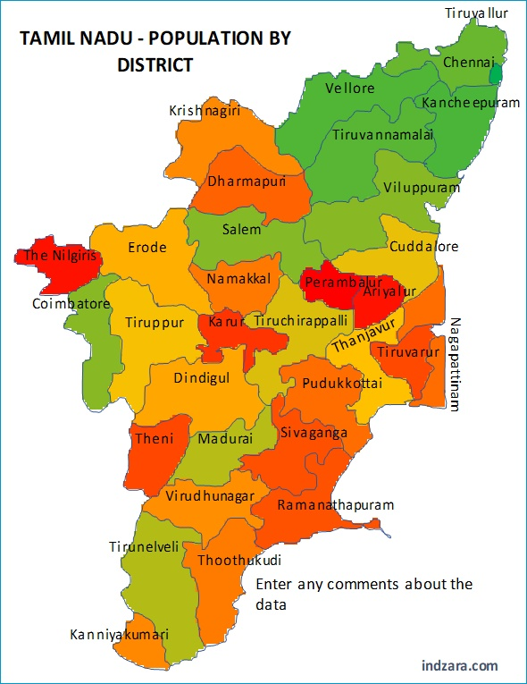

LET'S HAVE A LOOK AT THE TOUR MAP
WHERE TO VISIT , WHAT TO SEE?
SOME HOT PICKS(#HAVE_TO_VISIT)
- RAMESHWARAM - BEAUTIFUL HOLY ISLAND
- CHENNAI - CONVOLUTED WITH TEMPLES ,CHURCHES AND BEACHES
- OOTY - QUEEN OF HILLSTATIONS , DODEBETTA PEAK , KETTI VALLEY , PYKARA FALLS
- YERCAUD - POOR MAN'S OOTY
- MAHABALIPURAM - INTRICATELY CARVED TEMPLES AND ROCK CUT CAVES
- KANYAKUMARI - VIVEKANANDA MEMORIAL
- KANCHIPURAM - GOLDEN CITY OF THOUSAND TEMPLES
- KODAIKANAL - MESMERIZING SCENIC BEAUTY , KODAI-PALANI TERK , VATTAKANAL
- MADURAI - LOTUS CITY
- COIMBATORE - MANCHESTER OF SOUTH INDIA, LORD SHIVA IDOL , VALPARAI(OBSCURE HILL STATION)
- THANJAVUR - KNOWN AS TANJOR OR CITY OF TEMPLES
- HOGENAKKAL - SMALL VILLAGE WHOSE PRESENCE SPLITS THE KAVERI RIVER INTO MANY STREAMS
- MADUMALAI - NATIONAL PARK WITH LARGE VARIETIES OF FLORA AND FAUNA , SILVER CASCADE FALLS
- THIRUVANNAMALAI - HOLY TOWN AND FAMOUS TEMPLE ARUNACHALA TEMPLE
- TUTICORIN - TEMPLES, CHURCHES, MONUMENTS
- KUMBAKONAM - GORGEOUS TEMPLE TOWN
- CHETTINAD - TEMPLE TOWN WITH WALKING PLEASURES
- TRICHY - RELIGION AND CITIES THAT ARE NOTHING BUT CONCRETE JUNGLES
- CHIDAMBARAM - BEAUTIFUL TEMPLE TOWN IN EASTERN PART OF TAMIL NADU .
- KUTRALAM - CONNECT WITH NATURE AND GET LOST IN THE PENCHANT OF SPIRITUALITY
- BELLIKKAL - PLACE WHERE YOU CAN COMPLETELY RELAX
- MONUMENTS FROM THE RULERS OF MANY EMPIRES ,BRITISH AND IMPORTANT CENTRE FOR HEALTHCARE -HOSPITALITY
- TIRUCHIRAPALLY
- PICHAVARAM - MANGROVE FOREST
- KALUGUMALAI - KNOWN AS HILL OF VULTURES DUE TO ITS TEMPLES
- KOLLI HILLS - MOUNTAIN OF DEATH
- GANGOIKONDA CHOLAPURAM - ARCHITECTURAL AND ENGINEERING GENIUS OF THE CHOLA DYNASTY
- PAPANASAM FALLS - IMMACULATE SHEET OF WHITE WATER
- MEGHAMALAI - HIGH WAVY MOUNTAINS WITH LUSH GREN TEA PLANTATIONS
OTHER_ATTRACTIONS
- VELANKANNI - CHRISTIAN LAND
- DHANUSHKODI - RUINS OF MONUMENTS NEAR BEACH
- YELAGIRI - SMALL HILL STATION IN VELLORE
- VEDANTHANGAL - CLOSE TO MAHABALIPURAM ,FOR BIRD SANCTUARY
- TRANQUEBAR - THE LAND OF SINGING WAVES
- SALEM - STEEL CITY OF TAMIL NADU
- THENI - UNPRECEDENTED SERENITY AND PEACE
- POLLACHI - POPULAR FILMING CITY DUE TO ITS LAVISH GREENERY AND BLISSFUL SCENERIES
- YANAM - GODAVARI MEETS KORINGA TO THE SOUTH OF KAINADA DISTRICT
- ANNAMALAI TIGER RESERVE